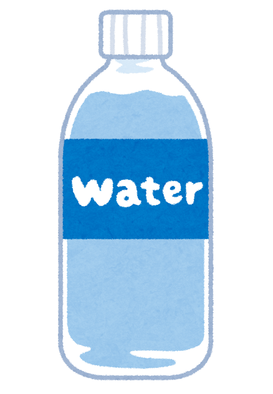
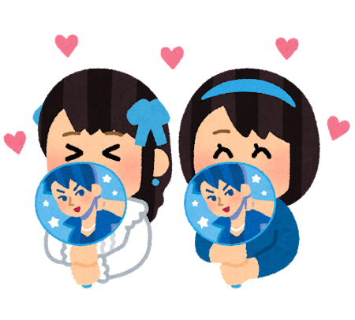

때는 2025년 여름, 나는 문화생활(아이돌 콘서트 감상)을 위해 밖에 나왔다. 바깥 공기를 즐길 여유는 없었다. 공연 시작까지 5분밖에 안 남았기 때문이다! 작열하는 태양 속에서 전력질주를 한 끝에 늦지 않게 도착할 수 있었다. 아이돌 오라버니들이 팬들을 위해 시원한 물을 준비했다고 했지만 그런 걸 챙길 시간은 없었다. 그렇게 나는 집에서부터 동행한 미적지근한 생수병을 들고 공연장에 입장했다..
나는 낯을 매우 가리지만 한 번만 만날 사람에게는 아니다. 그런 나에게 콘서트 옆자리 사람은 그 날 하루동안 최고의 친구다. 나는 스캔 후 오른쪽 사람과 친해져 보기로 마음먹었다. 공연장의 불이 꺼졌고, 나는 우레와 같은 함성으로 오라버니들을 마주하기 위해 바닥에 두었던 물로 목을 축였다. 물은 아주 달고 시원했다.
어?물이 왜 시원하지? 그렇다. 실수로 옆자리 사람의 물을 마셔 버린 것이다. 이 사실을 깨달았을 때, 공연 카운트다운이 시작됐다.
5..
이 사실을 말해야 하나? 그냥 모른 척 할까?
4..
공연이 시작되면 말 할 기회가 없을텐데..
3..
결국 나는 사실을 고하기로 했다.
2..
“진짜어이없으실거아는데제가헷갈려서물을바꿔마신거같아요ㅜㅜ입은정말안댔어요너무죄송합니다.”
1..
“아.. 괜찮아요”
라고 했지만 그녀는 중요한 순간에 방해받은 것이 무척 당황스러운 것 같았다. (이해해요)
잠깐의 정적. 그런데, 그녀가
“근데 헷갈리기엔 너무 다른 것 같은데 ㅋ..”
라며 헛웃음을 치는 것 아니겠는가.엥? 내잘못은 맞지만 왤케 싸가지가 없지? 친구가 되기는 글렀다. 그렇게 공연이 시작되었다.

신경쓰지 않으려 했지만 나는 남 눈치보기 1위 mbti INFP로, 공연이 진행되는 내내 옆자리가 신경쓰였다. 그녀는 자신의 오른쪽 사람과 친해져 나에게는 눈길도 주지 않았다. 공연은 하이라이트에 접어들어 관객들은 모두 자리에서 일어나 있었고, 함께 방방 뛰며 공연을 즐기고 있었다. 나는 조금 외로웠지만, 콘서트에 친구를 사귀기 위해 오는 건 아니니까 무대에 집중하며 감상하고 있었는데......
그녀가 나에게 슬쩍 어깨동무를 하는 것 아니겠는가. 뭐지??? 몹시 당황스러웠지만 노래가 너무 신나서 합리적인 사고를 할 수 없었다. 그렇게 나는 생수 사건은 잊은 채 그녀와 십년지기 친구처럼 함께 공연을 즐겼다..공연이 막바지에 다다랐다. 앵콜 타임에 그녀는 함께 사진을 찍자고 했다.. 나는 낯을 가릴 뿐 아니라 거절도 못하는 성격이기 때문에 함께 셀카를 찍었다. 공연 종료 후에는 눈웃음 지으며 “내일도 오세요?” 라고 묻기까지 했다.
물론 다음 날에도 가긴 했지만 나는 낯을 가리기 때문에 두 번 다시 그녀를 만나는 일은 없었다..
그렇지만 그녀가 어떻게 나에게 마음을 열게 되었을지 종종 생각하게 된다. 같은 대상을 사랑하는 나의 진심이 그녀에게 닿은 것일까? 아니면 “근데 헷갈리기엔 너무 다른 것 같은데 ㅋ..” < 이게 그녀의 관심 표현 방식이었을까? 어쨌든, 음악으로 화합해서 그 순간만큼은 최고의 친구가 되는 경험이 꽤나 즐거웠다.
근데 너무 무서워서
다음에는 이런 사람 옆에 앉고 싶지 않다!!!